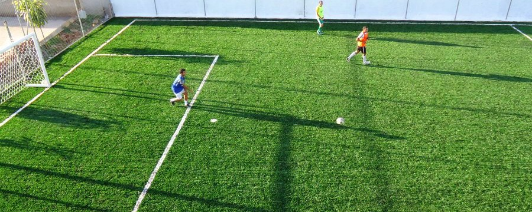
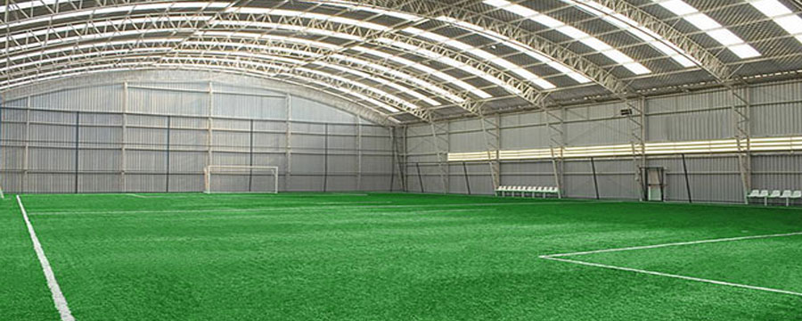
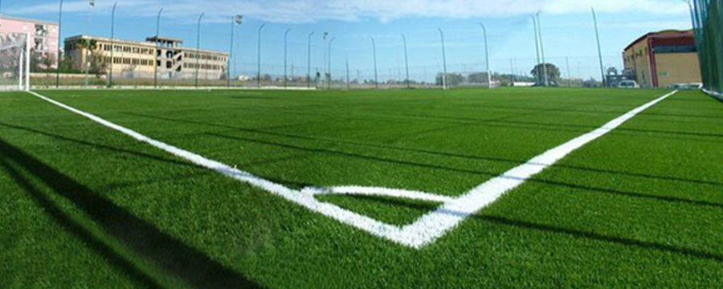
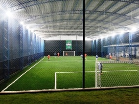
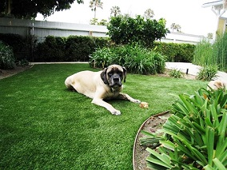

Contato:
(41) 3082 8850 - Grama sintética Esportiva e Decorativa


Grama Sintética Esportiva
Qualidade, beleza e confiança.
O que fazemos
Um novo ar para você
A grama sintética é uma opção moderna ao mesmo tempo sem tirar a impressão natural de seu jardim ou campo, a tecnologia é tão avançada que um artigo ainda descreve alguns gramados artificiais como "virtualmente indistinguível de grama quando visto a partir de qualquer distância."
Instalação
Instalação profissional
A instalação do gramado sintético é realizado por pessoal especializado, garantindo que o gramado não fique com algum desnivel, visualmente inferior ao previsto ou solto, caso contrario alem de não ficar como o esperado diminui a vida útil da grama sintética.
Material de qualidade
Escolhendo a grama correta
Praticantes do esporte que utilizam a grama sintética da Realturf apontam sua a maciez como grande diferencial. O perfeito acabamento do campo e o aspecto visual a longo prazo também são benefícios destacados pelos usuários, a fidelidade ao jogo em grama natural é perceptivel.
Mais sobre nossos produtos


Grama sintética para futebol
Grama sintética está cada vez mais popular no futebol, no exterior já é predominando e no Brasil cresce cada vez mais, tanto para centros de treinamento, centros desportivos, escolas e até mesmo uso residencial. Serviços de fornecimento e instalação estão disponíveis para a maioria das modalidades esportivas, acesse nossos produtos para saber mais sobre as modalidades que podem usar grama sintética.

{kind=link}
Grama artificial decorativa
Nosso moderno sistema de grama sintética imita características da grama natural. Nossos produtos foram amplamente testados para atender aos padrões de esportes profissionais. Está isponível para campos de futebol, campos de hóquei, golfe, ténis e rugby. Algumas também estão disponível nos padrões da FIFA para as normas de futebol e FIH para o hóquei.

{kind=link}
Grama para vários tipo de locais
Grama artificial também é uma alternativa bonita e prática para jardins e áreas de lazer, usada como decorativa. Seu quintal com a mais sofisticada grama sintétoca sem o incomodo e com beleza sem igual. A grama artificial tem uma aparência natural é maravilhosamente macia para andar, mesmo descalço.
Nossos Serviços
-
-
Grama Sintética no Brasil
Há um enorme número e tipos de sistemas da grama artificial, alguns se parecem entre si, porem geralmente feitos de material diferente um do outro ou então produzidos por diferentes empresas e cada uma é desenvolvido com um propósito especifico, onde cada objetivo requer diferentes técnicas.Grama sintética SC
-
Tipos de Gramado Sintético
As diferenças básica quando se trata de Grama sintética que podem ser feitas são sistemas disponíveis que são ditos como "vazios" e "cobertos". Nos cobertos encontramos dois tipos, o coberto com borracha e o coberto com areia.
Os cobertos, é preenchido o carpete com um material granulado até em torno de 3 mm da altura dos filamentos,o que normalmente é feito de sílica especial, o que representa mais ou menos noventa porcento do peso do gramado.
Os vazios que são usados muito mais comumente nos campos mais modernos, o carpete mostra uma diferença visualmente diferente onde as fibras chegam a uma altura de 50 a 60 mm.
Neste caso também são usadas sílica especial, porem usadas para servir de lastro para o carpete para dar mais segurança para que a grama sintética não se movimente durante o jogo. Nem se estiver muito quente ou então com fortes chuvas, em cima da camada de sílica é colocada a camada de borracha, porem esta também tem sua técnica e deve obedecer normas de consistência, tamanho e formato, neste passo a camada não pode preencher os filamentos completamente, por causa da altura do gramado este devendo permanecer pelo menos 3 mm menos que a altura do filamento. No caso do filamento ser maior que 6 mm este não consegue manter a borracha dentro do gramado, Fazendo com que vaze para as laterais, caso isso ocorra o campo vai ficar desuniforme e irregular. A borracha que é colocada na Grama sintética também tem influencia no interação bola campo, o que pode acabar causando problemas imprevisíveis prejudicando os jogadores.
No sistema vazio apenas o carpete da Grama sintética é www.estruturametalicapr.com.br colocada e tudo ocorre diretamente sobre a fibra. estruturametalicapr.com.br Nestes casos o tapete artificial precisa ser muito mais denso. Este tipo de material também é considerado mais curto.
Segue outros casos que influenciam no campo final:
• Os dois polímeros que são mais importantes para um campo propicio são o polipropileno e o polietileno (nylon). Os basicamente são modificados para produzirem mais durabilidade, resistência à fricção, resistência ao clima, etc.
• O corte individual de área. Os cortes variam dependendo do procuto. A medida da fibra é o Dtex – quanto maior for o Dtex maior será o peso da fibra por calculando por unidade de comprimento. Isto não necessariamente significa que um Dtex de alto valor terá a qualidade mais alta que os outros. Tendo em vista a qualidade é necessário levar em consideração a composição química do “equipamento”. Caso tenha duvidas em relação a isso pode nos consultar.
-
-
"Um produto precisa ser inovador o suficiente pra se diferenciar do resto, mas não tão inovador que o usuário não entenda." - Reid Hoddman
-
"A felicidade não está em viver, mas em saber viver. Não vive mais o que mais vive, mas o que melhor vive."
- Mahatma Gandhi
-
"Neste mundo, você paga um preço todos os dias. As vezes gasta tudo o que tem."
- Stephen King